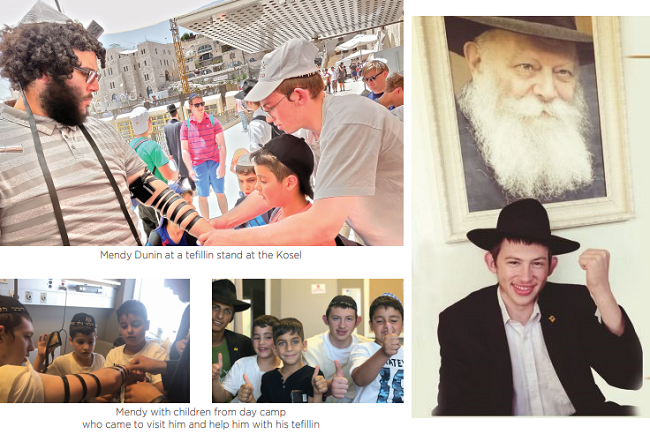

The Great Miracles of Menachem Mendel Ben Rivka
The announcement to say T’hillim for Menachem Mendel ben Rivka had thousands of people davening for the boy who fell in camp and was fighting for his life. * Three weeks later, he and his mother tell about the great miracles they experienced, about the strong emuna and unbearable moments. * A walking miracle.
By Mendel Arad

It isn’t easy to listen to a mother who fought like a lioness for her son with her belief and trust in Hashem, and nor is it easy to listen to the emotional upheavals of a mother who is fighting with herself and her turbulent maternal feelings. A mother who, even as she watches her son hovering between this world and the next, and what she sees looks black as can be, despite everything, keeps her wits about her and chooses to have her mind rule her heart and believe and trust in Hashem, that He will do miracles and her son would get up on his feet and tell about the deeds of Hashem.
ADVANCE PROVIDENCE
Friday, the 15th of Av, at 1:30 pm. A text was sent out that frightened whoever received it: Urgent, please say T’hillim for the refua of Menachem Mendel ben Rivka. His situation is critical. A camp counselor who fell on his head from a height of three meters (over nine feet). He is hanging between life and death.
Only two weeks later, I spoke with Menachem Mendel ben Rivka, otherwise known as Mendy Dunin, and his mother. They were bursting with song and thanks for the miracles and kindnesses that they experienced.
How are you, Mendy?
“Boruch Hashem. The situation is slowly improving. I’m at home now, still having strong headaches. I have a skull fracture and that takes several months to heal. I can’t walk much but, boruch Hashem, just as the Rebbe ran things until now with open, speedy miracles, with Hashem’s help, things will continue this way.”
The story began at the day camp where Mendy was a counselor. The day camp is for children, some of whom are not from religious homes. The day camp was run in a fantastic atmosphere of shlichus.
“On the first day, children came without any apparent connection to Judaism and you realize that you have to start with them from zero, teach them to daven, to say brachos, talk about kashrus and other concepts in Judaism.
“Of course, the topic of Moshiach and Geula is an inseparable part of the experience. We explained it to them just as it was explained to us as children, about the Geula, that candies will grow on trees, and we described how clouds will take us to the Beis HaMikdash.
“When we visited the Kosel, we saw how much the children had internalized the messages we had conveyed and they looked at the clouds above as they imagined how they would descend and take them. One of the campers said that he went to his mother and told her that he wants Geula to come. She corrected him and said ‘the Geula, not Geula.’ We saw with what sincerity and simplicity the children absorbed the messages and brought them home.”
Give us an example of your activities.
“In hindsight, you can see how everything is by divine providence. Here’s an example. We did a special activity with the kids about trusting Hashem. One of the elements of the activity was that each bunk was divided into two groups and we gave them red and green tickets. Every child had to collect as many tickets as possible without knowing which ticket would help him win and which wouldn’t.
“The game was rigged. Those who listened to their counselors who told them it paid to take green tickets, won. At the end of the activity, we explained that the fact that they relied on their counselors who knew ahead of time which ticket is better, is what made them win. The same is true in life. When a Jew relies on Hashem and follows His guidance, even if it looks as though he is getting further from what he wants, the truth is, trust in Hashem and relying on Him is the best way and brings you success.
“This game turned out to be a reflection of the game of life, like in my case, when my prognosis was bleak but thanks to everyone’s prayers, and mainly thanks to my mother’s prayers, for she was convinced that I would survive with open miracles, we got the ‘ticket to life.’”
TERRIBLE PHONE CALL
Mrs. Dunin, where did you hear the news?
“On my way back from the Kosel.”
Why were you at the Kosel on a Friday afternoon?
“That is a question that I myself cannot answer. I usually do not leave the house on Fridays, as I am busy doing all my Shabbos preparations then. But that day, for some reason, I had a strong desire to go to the Kosel. I took the children and we went. Even when we finished davening, I felt the need to daven Mincha at the earliest possible time. Later on, it turned out that at the time that I davened for the children, Mendy was hovering between worlds …”
After a moment’s thought she added, “It is very possible that the fact that the day before Mendy had been at the Kosel with the day camp children, caused me to go to the Kosel too.”
Mendy, what happened at the Kosel?
“We made a big rally saying the p’sukim, but that’s not all. My father a”h was active at the tefillin stand at the Kosel for many years. When I came with the kids, I thought, it’s not enough to show them what a tefillin stand looks like, as though they are tourists, and it’s not enough to teach them about tefillin and its importance. I have to throw them into the mivtzaim experience. So together, we approached the people manning the stand and the children did Mivtza Tefillin.”
Mrs. Dunin added, “The sequel is much more moving. When the day camp kids came to visit Mendy in the hospital, they did Mivtza Tefillin with him and put his tefillin on him.
“When I finished davening,” she said, going back to the beginning, “I told my daughter that it was late and another guest was coming for Shabbos and we had to get home to welcome her. We went in a taxi and then, in the middle of the ride, I got the terrible news from a Magen David Adom paramedic.
“The truth is that at first, I did not understand just what had happened and what he was explaining to me. My head was suddenly dense. I just understood that something very scary took place, that my son was in great danger and that I had to get to the hospital. I told the girls, ‘Say T’hillim, something happened to Menachem Mendel!’ We traveled home to Gilo. The children went into the house and I asked a friend to come with me to the hospital.”
How did it feel to get news like that immediately after davening at the Kosel?
“I wondered, ‘Hey, what was wrong with my davening?’ I davened that my children should be well and this is the news I get right after davening?
“But Hashem sent me a friend to go with me to the hospital, like an angel from heaven. As much as a person knows and ‘lives’ with Chabad values, like thinking positively and the mind rules the heart, in a moment of truth it is very hard to live it on your own.
“She grabbed me and said, ‘Rivka, nothing bad will happen to him. It will all be fine. Think positively and it will be good.’ And this gave me strength. It may sound odd, but I believed her that it would all be fine.
“At that moment, I decided that I was not going to get hysterical. I could cry as much as I wanted; I could daven, but I could not lose myself. I had to be in control of the situation, take responsibility and be there for him as someone strong, believing and trusting, and not leave him for a moment; to remember that the Rebbe is with us and that Hashem in His mercy does not leave us for a moment.”
You went to the hospital and saw Mendy?
“No. I saw him from the distance and that was bad enough. Suddenly, everything you know from the stories becomes the black reality. My son was lying there, attached to machines; there are no words to describe haw hard that was to see. I saw the grave faces of the doctors and that said it all. When I got to the hospital, Mendy was not breathing on his own; he was on a ventilator.
“At first, they spoke about brain surgery because there was a life-threatening hemorrhage, but boruch Hashem, the miracles did not stop. He was able to breathe on his own again. They decided an operation was not necessary. Hearing this, it was clear to me that Hashem does hear prayers and from then on, there would only be miracles. I had absolute trust in Hashem that if He did a miracle like this, and gave Mendy’s neshama back, He could completely heal him.”
YOU CHABADNIKIM LIVE ON MIRACLES
Mendy, what happened at the gym?
“Those who know me, know that I have a lot of energy; I’m even a bit of a rascal. The night before, I suddenly got serious and I said to everyone, ‘The fifteenth of Av is a date that the Rebbe spoke about a lot. We need to farbreng.’ We went to a park and farbrenged. Then we farbrenged again in my house. I believe that this farbrengen had a positive effect, for what a Chassidishe farbrengen accomplishes, even the angel Michoel cannot accomplish.
“On Friday, at the end of the camp day, when the children had already gone home, we did all kinds of exercises in the gym that we had done before and ‘knew’ how to do. I climbed a ladder and hung from ropes attached to the ceiling in order to do a somersault and jump down. There were mats on the floor to break your fall in case it wasn’t the way it was supposed to be.
“I did land on my feet but by doing so, I caused the mat to slide and banged my head into the floor. I don’t remember falling but that is what they told me later.
“Friends came to pick me up. They thought I was playing a trick on them, but I suddenly began to go into a seizure and blood came out of my mouth. They ran to call Rabbi Shai Ganani who knows first aid and is one of the people in charge of the camp. The first aid he gave me saved my life.”
R’ Shai, rumor has it that you resuscitated him and saved his life.
“No, I did not resuscitate him; but it was definitely life-saving aid. I immediately ordered people not to touch him in fear of a spinal injury. At that point, he could breathe. I called for an ambulance that came within minutes. There wasn’t much to do, just to stabilize him, to watch his breathing and protect his head.”
What was his condition when the ambulance came?
“The driver of the ambulance told me that the way he sees the situation, there is no natural way of the patient making it. Mendy was clinically dead for an hour. ‘However,’ said the driver, ‘I was at an event of a Chabad bachur who was hit by an ambulance and fractured his skull and hemorrhaged and he survived. You Chabadnikim live on miracles thanks to your Rebbe.’
“When he got to the hospital, the doctors were skeptical. They said that even if someone remains alive after such a head injury, there is permanent brain damage and often motor damage as well. A CT scan showed that his memory was gone. The doctors also observed that his right eye was affected and he couldn’t see with it. They concluded that even if he remained alive, he would need rehab for a year and a half! But we saw how the Rebbe ran the whole show thanks to everyone’s prayers. Prayers never go to waste.
“The Rebbe took Mendy by the hand. I immediately wrote to the Rebbe. Unfortunately, I don’t remember where in the Igros Kodesh the answer was, but the message was that there would be brachos. I ran to the Dunin home and checked the mezuzos. Three mezuzos were pasul! In one mezuza, the letter lamed in the words kimei hashamayim al ha’Aretz (as the days of heaven upon the earth) was missing. I immediately changed the mezuzos and took Mendy’s tefillin to be checked. As soon as I left their house, I got a phone call that said Mendy was breathing on his own.
“At this critical point, his camp friends wrote to the Rebbe and opened to an answer in the Igros Kodesh that seemed delusional to act upon. It was a letter in honor of a seudas hodaa (a meal of thanksgiving) with blessings that it lead to a full recuperation of the person.
“Then we, the counselors and staff, went to the ICU waiting room and farbrenged and sang the Rebbe’s niggunim, and from that point is when the miracles really started to roll.”
How did the miracle happen?
Mrs. Dunin: “It was a chain of miracles. For the first four days, Mendy was in a coma. At the end of the week, he opened his eyes, but his condition was still critical.”
What do you remember from the moment he woke up?
“He woke up for a few seconds. He looked at me and just said, ‘Ima,’ and went back to sleep. The second time too, he woke up for a moment, looked at me and said, ‘Ima.’ That meant everything to me; it’s indescribable.
“Throughout those days, I barely slept. I sat next to his bed every night in the ICU, for eight days. It wasn’t easy, certainly not for a widow who has sole responsibility for him. I felt the siyata d’Shmaya.
“The story about the food was also miraculous. At first, after he woke up, they wanted to feed him through a feeding tube, but he pushed it away. I told the doctors: We saw miracles and with Hashem’s help we will continue to see miracles. Don’t give him a feeding tube. I will take responsibility. I fed him drop by drop. That they listened to me was a miracle in itself.
“Then his friend, Shmuel Mizrachi from Kfar Chabad, came. He brought the Rebbe’s wine. I poured drops into his mouth. That happened along with a farbrengen with niggunim, and after that his recovery was swifter than anything we could have normally expected.”
What message would you like to convey to our readers?
“First, I want to thank the thousands of people in Eretz Yisroel and worldwide who prayed for him and made good resolutions in his merit. That strengthened us a lot throughout that difficult period. I also want to thank his friends who did everything for him materially and spiritually; Rav Ganani for the first aid he gave on the spot, saving his life, and R’ Reuven and Esther Ashkenazi who helped me devotedly from the first moments and all the way through.
“As for t’fillos, when someone prays, it protects and has a positive effect. Prayer is potent. Nothing bad descends from Above.”
Mendy, what message do you want to convey to our readers?
“First and most important is that it is forbidden to rely on a miracle. You need to be extremely careful with games that have an element of danger. I learned the hard way that the Torah’s instruction ‘to be exceedingly careful of your lives,’ and ‘danger is more severe than a prohibition,’ comes first.
“Even while being hospitalized, I saw how the world is ready for the Geula and how even in the blackest situation, the true reality is the way that the Rebbe operates in the world.”
What do you mean?
“I’ll give you some examples. When they wanted to transfuse me, I insisted that they not do it with my right hand since that’s the arm I put tefillin on (I’m a lefty). They tried a few times with my left hand, poking me again and again, but were unsuccessful. The next day, one of the doctors said to me that he was very touched to see how much I cared for t’fillin even when I was sick, and he, the doctor, wanted to put on tefillin.
“Throughout my hospitalization I had a dollar and picture from the Rebbe under my pillow. When they took me for a CT scan, the pillow moved and the picture fell. One of the Arab doctors in the room asked, ‘Who is that, the Moshiach?’
“And mainly, when I was released, there was a spontaneous gathering of some doctors, ten of them, who were amazed by my miracle. One of them, a doctor with a knitted kippa, addressed all his fellow doctors and said: ‘You should know that he was saved because he is a Chabadnik and Chassid of the Lubavitcher Rebbe.’
“The most moving part was that I was not expecting to be released from the hospital so soon. It was when my friends were visiting and the doctors suddenly came into the room and gave me the release papers. Just like that, a surprise. I told my friends that the Rebbe will be revealed just like that. As much as we are waiting and anticipating and preparing and praying, it will suddenly happen, in a moment; Geula.”
Beis Moshiach (staff). "The Great Miracles of Menachem Mendel Ben Rivka." Beis Moshiach, no. 1138 (October 24, 2018).